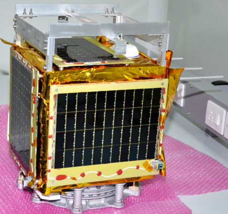
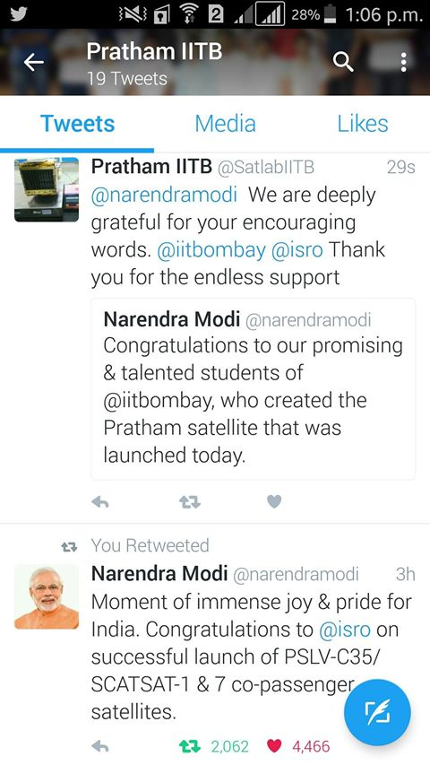

'Pratham' is the first satellite under IIT Bombay Student Satellite Project, designed and built exclusively by the students of IIT Bombay at a cost of INR 10 million. It was launched on-board PSLV-C35 on 26th September 2016. The payload of Pratham was to measure the Total Electron Count (TEC) in the ionosphere over India, using Faraday Rotation. After the launch, the beacon signal of Pratham was received at multiple locations around the world. Since the downlink signal wasn't received, the mission was deemed 90% successful.
On the technical front, the TEC would help correct GPS signals, which get distorted when passing through ionosphere
and help make GPS more accurate. Also, in certain extremely rare and special scenarios, the TEC values could help predict Tsunamis.
In addition, this project took IIT Bombay into the space age. A project like Pratham enables
students to apply the concepts they learnt in theory to practice. Also, the scale and complexity of such
a project introduces students to real world problems, where resources including timelines are scant and team dynamics are complicated.
Finally, the social goal of Pratham (involving other colleges and universities in satellite and space technology) enabled the propagation of enthusiasm and knowledge
related in various colleges of India.
I was involved with the Student Satellite Project for all 5 years of my stay at IIT Bombay. I joined in the Electrical Subsystem in my first year at IIT Bombay and was leading the Subsystem when Pratham launched. Later I headed the work on Advitiy, the second satellite, as the Project Manager. The following points would briefly summarize my work in Pratham.
The satellite, as explained in the "About The Project" section, achieved 90% success, since only the beacon signal was received and not the downlink. A few minutes after the launch of the satellite, the Prime Minister of India tweeted a congratulatory message for the team. Two days later, the Governor of Maharashtra personally felicitated us at his residence. However, I believe that the greatest impact of this project is that today, there are children in India, who can dream about having their own satellite orbiting the earth before they even graduate, and this dream doesn't seem too ambitious. 
This project had a life-changing impact on me. Working in the satellite team made me confident that I can work in a long and demanding project, even overwhelm myself, if the end-goal is challenging and ambitious enough. It introduced me to the various uncertainties and surprises (both technical and non-technical) that welcome one in the course of the journey and gave me the confidence that I can be deal with them. It showed me that I enjoy learning new things, outside my comfort zone, especially if the learning complements my existing knowledge and takes me closer towards a specific goal. I majored in Mechanical Engineering in IIT Bombay. However, in the Satellite Team, I was recruited in the Electrical Subsystem. I went on to lead the Electrical Subsystem, interface with the On-Board Computer and Communications Subsystem and eventually went on to take Systems Engineering and Project Management roles. I joined the team with no knowledge of programming and ended up co-authoring the flight code of Pratham (> 10,000 lines). This project also helped me develop a system-level perspective in decision-making. Finally, it showed me that in spite of giving our all, sometimes things may not go as planned. And one just needs to learn from one's mistakes and move on with the aim to create better results next time.